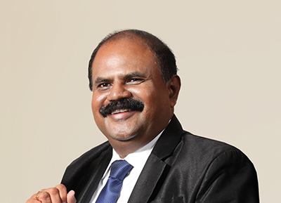
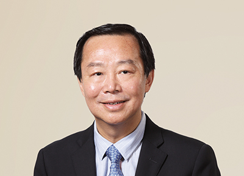
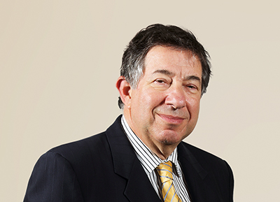
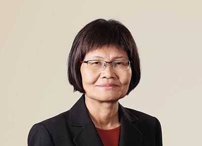
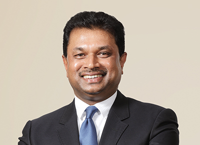
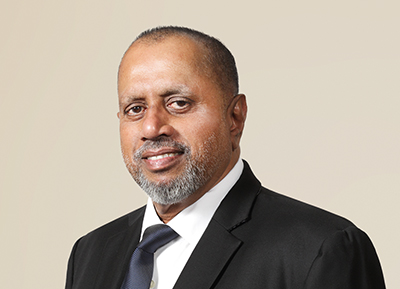
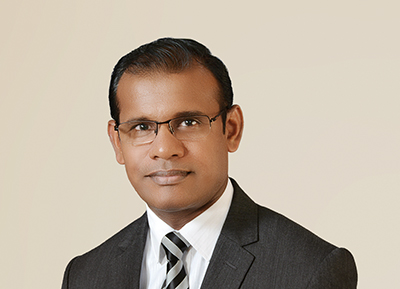

Mr P G Kumarasinghe Sirisena
Chairman
Mr Kumarasinghe was appointed as an Independent Non-Executive Director and Chairman of the Board on 23 January 2015. He is the Director/Chairman of Mobitel (Private) Limited, SLT Campus (Private) Limited, SLT Human Capital Solutions (Private) Limited, Sky Network (Private) Limited, SLT Publications (Private) Limited, SLT Property Management (Private) Limited, Sri Lanka Telecom (Services) Limited and, SLT VisionCom (Private) Limited, as well. He also serves as the Non-Executive Director/Chairman eChannelling PLC.
Mr Kumarasinghe holds a BSc Honours (Special) Degree in Management from the University of Sri Jayewardenepura. In addition, he holds an MBA from the University of Wayamba and a Master of Public Management from the Sri Lanka Institute of Development Administration. He is a Postgraduate Diploma holder in Accountancy & Financial Management and Project Management from the University of Sri Jayewardenepura. He also holds a Diploma in Business Management from the National Institute of Business Management. Mr Kumarasinghe counts over 19 years of experience in General Management, Financial Management and Human Resource Management both in Private and Government Sectors.
In addition, Mr Kumarasinghe is a Fellow of the Chartered Institute of Marketing (FCIM-CIM), Institute of Certified Professional Managers (FCPM-CPM), Institute of Government Accounts and Finance (IOGAF), Association of Accounting Technicians of Sri Lanka (FAAT) and the Association of Public Finance Accountants of Sri Lanka – the Public Sector Wing of CA Sri Lanka (APFA). He is a Certified Member of the Sri Lanka Institute of Marketing (CM-SLIM), Member of the Sri Lanka Institute of Directors (M-SLID), Honorary Member of Institute of Personnel Management Sri Lanka (HM-IPM) and an Associate Member of Association of HR Professionals of Sri Lanka (AM-HRP).
Mr Kumarasinghe was the Managing Director of State Development and Construction Corporation and CEO/General Manager of State Timber Corporation. He has served on the Boards of Mahaweli Engineering Services Limited and the Sri Lanka Land Reclamation and Development Corporation. He currently serves as a Director of the Land Reclamation & Development Company Limited (REDECO), L R D C Services (Private) Limited and as the Financial Consultant of the Araliya Group of Companies. He is a member of Board of Governors of SAEGIS Campus.

Mr Chan Chee Beng
Director
Mr Chan was appointed to the Board as a Non-Executive Director on 5 June 2008 and subsequently to the Board of Mobitel (Private) Limited, SLT Property Management (Private) Limited and SLT Campus (Private) Limited. He also serves as the Chairman of the Audit Committee, Remuneration & Nomination Committee and a member of the Related Party Transactions Review Committee.
He counts over 37 years of experience in investment banking, general and financial management and accounting. He worked at Ernst & Young and Morgan Grenfell & Company Limited prior to joining the Usaha Tegas Sdn Bhd (‘UTSB’) Group in 1992 as Head of Corporate Finance. He serves on the Boards of several companies including Bumi Armada Berhad, Binariang GSM Sdn Bhd and Maxis Communications Berhad of Malaysia.
He is also a Director of Yu Cai Foundation and MEASAT Satellite Systems Sdn Bhd (‘MSS’), a regional operator.
Mr Chan holds a degree in Economics and Accounting from the University of Newcastle-upon-Tyne, United Kingdom and is a Fellow of the Institute of Chartered Accountants in England and Wales.

Mr Lawrence Paratz
Director
Mr Lawrence Paratz was appointed to the Board of SLT as an Independent Non-Executive Director on 26 May 2010.
He holds an MSc (Telecommunication Systems) with Distinction and was awarded the Philips prize from Essex University and an MEng Sc from the University of Queensland.
He is a Fellow of Engineers Australia (FIEAust) and an alumnus of the Stanford University Executive Development Programme. In addition, he holds a Bachelor’s Degree in Science and Engineering (Honours). In 2011, he was elected as a Fellow of the Australian Academy of Technological Sciences and Engineering (ATSE).
Mr Paratz has more than 30 years experience in all facets of the telecommunication industries, including mobile, fixed, broadband, satellite and international networks, both domestic and international. This includes Capital and Infrastructure Development, Operations, Sales, Customer Service and Regulatory Issues. As Director and Chief Executive of Acacia Australia Private Limited, he was responsible for the development of an integrated proposal for national broadband communication in Australia.
He has served as a Director of Maxis Communication Berhad, Chairman of the Technology Committee of the Board and a Director of Vernet Private Limited, a company providing ultra high speed broadband to universities and research establishments in Australia. He was a former senior executive of Telstra Corporation as well. Mr Paratz is the Chairman of the Technology Subcommittee and member of the Senior Tender Board. He also serves as a Director of Mobitel (Private) Limited, eChannelling PLC, Sky Networks (Private) Limited, SLT Property Management (Private) Limited, SLT Campus (Private) Limited, Sri Lanka Telecom (Services) Limited, SLT VisionCom (Private) Limited, and SLT Publications (Private) Limited. He is also a Director of Real Thing Entertainment Pty Limited, and Razorback Private Limited.
Mr Paratz has had executive responsibility for multibillion dollar programmes and integrations, including network transformations and deployments across multiple technologies, with extensive experience in international, metropolitan, regional and rural communications. He previously served as a member of the Board of the Australian Government’s Internet Assistance Programme. He has been an acclaimed speaker at the Australian Health Informatics Conference and the Australian Academy of Technological Sciences and Engineering.
Mr Paratz was formerly Chairman of the On-Trac@Peter Mac Adolescent and Young Adult Cancer Programme and has been involved in a number of initiatives on e-health as well.

Ms Lai Choon Foong
Director
Ms Lai was appointed to the Board of SLT and Mobitel (Private) Limited on 9 May 2014 as an Independent Non-Executive Director. She is the Chairperson of the Senior Tender Board and a member of the Audit Committee and Related Party Transactions Review Committee. She also serves as a Director of SLT Human Capital Solutions (Private) Limited.
She has over 35 years of experience in finance, procurement and auditing in telecommunications, banking and government sectors. She was previously with Maxis Berhad and is currently the Finance Head of Maxis Communications Berhad. She is also a Non-Executive Director of three subsidiary companies in Maxis Communications Berhad.
Ms Lai holds a Bachelor of Commerce Degree from Melbourne University, Australia and is a Chartered Accountant of the Malaysian Institute of Accountants and a Certified Practicing Accountant of CPA Australia.
Ms Chandra Ekanayake
Director
Ms Ekanayake was appointed to the Board on 3 February 2015, as a Non-Executive Director, and is a member of the Audit Committee and Related Party Transactions Review Committee. She also serves as a Director of SLT Property Management (Private) Limited. and SLT Campus (Private) Limited.
She has been with the Sri Lanka Administrative Service since 1984. Ms Ekanayake is a Deputy Secretary to the Treasury and has held several senior positions previously in the Ministry of Finance. These include, Director of Economic Affairs, Controller of Insurance, Additional Director General – Department of External Resources, Director General – Department of Trade, Tariff and Investment Policy and the Director General – Department of National Budget.
Ms Ekanayake holds a Bachelor of Science (Special Degree) from the University of Kelaniya, and an MBA from the Postgraduate Institute of Management, Sri Lanka. In addition, she holds Postgraduate Diplomas in Development Planning Techniques (ISS, The Hague), International Relations (BCIS Colombo) and Economic Development (University of Colombo). She represented the Treasury in the Council of the Asian Reinsurance Corporation from 2002 to 2013 and functioned as it Vice-Chairperson from 2008 to 2013. She also represented the Treasury on the Board of NDB Bank from February 2011 until March 2015. At present, she represents the Treasury on the Board of People’s Bank and the Board of Management of the Superior Court Complex.
Ms Nilanthi Pieris
Director
Ms Pieris was appointed to the Board on 3 February 2015 as an Independent Non-Executive Director. She is the Chairperson of the Related Party Transactions Review Committee and also sits on the Audit Committee and the Senior Tender Board. She is also a Director of SLT Human Capital Solutions (Private) Limited.
Ms Pieris is an Attorney-at-Law of the Supreme Court of Sri Lanka and counts over 29 years of experience including 29 years of practice at the Bar. At present, she serves as a Partner of Paul Ratnayeke Associates.
She has held several positions at the Bar Association, including the post of Assistant Secretary.

Mr W K H Wegapitiya
Director
Mr Wegapitiya was appointed to the Board on 2 December 2015 as an Independent Non-Executive Director. He is a member of the Technology Subcommittee and Senior Tender Board as well. He also serves on the Board of SLT Campus (Private) Limited.
He is an award winning entrepreneur, who has gained local and international recognition. Mr Wegapitiya is the founder of ‘Laugfs’, a highly diversified business conglomerate with overseas operations. Mr Wegapitiya held many eminent positions in Government and Non-Government Institutions on voluntary basis. He was the past Chairman of Chamber of Young Lankan Entrepreneurs (COYLE), Senior Vice-President and Executive Council Member of Federation of Chamber of Commerce and Industry of Sri Lanka (FCCISL), former Executive Council Member of the Ceylon Chamber of Commerce. He served as a member of the National Pay Commission for several years, and also as a Council Member of the University of Sri Jayewardenepura.
Mr Wegapitiya holds a BSc in Business Administration from the University of Sri Jayewardenepura and an MBA from the Postgraduate Institute of Management (PIM) affiliated to the same University. At present he is reading for his PhD in entrepreneurship at the PIM.

Mr Rohan De Silva
Director
Mr Rohan De Silva was appointed as an Independent Non-Executive Director of the Company on 30 December 2015. He is a member of the Technology Subcommittee, Senior Tender Board and the Audit Committee. He also serves on the Board of SLT Property Management (Private) Limited.
Mr De Silva has over forty years of experience in management, in the mercantile and Government sectors. He is a specialist in shipping, marine, aviation and leisure sectors pioneering business ventures and innovating professional services in the mercantile sector in particular.
He is currently the Chairman of the McLarens Group of Companies, one of the largest diversified conglomerates in Sri Lanka. He also holds the title of the Honorary Consul of the Republic of Namibia in Sri Lanka and is a member of the Ceylon Association of Ships Agents Advisory Committee. In addition, he had served as a member of the Presidential Task Force engaged in the formulation of shipping policy.
Mr De Silva’s service to the Sri Lankan shipping industry had been recognised through a special award at the Colombo International Maritime Conference 2015 and special recognition as a ‘Shipping Personality’, by the Institute of Chartered Shipbrokers, UK – Sri Lanka Branch. He was also awarded the “Central Bank Governor’s Challenge Trophy – 2012” for Global Commerce Excellence.

Mr Mahesh Athukorale
Company Secretary
Mr Mahesh Athukorale is an Attorney-at-Law. He holds an MBA from the University of Colombo, and a Bachelor Degree of Law from the Open University of Sri Lanka. He is an Associate member of the Institute of Chartered Secretaries and Administrators of UK.
He joined Sri Lanka Telecom PLC in 2003 as the Assistant Company Secretary. In his career spanning over 20 years he has 13 years of experience in the SLT Group and seven years in the mercantile and financial sector.
He also functions as Company Secretary for Board Subcommittees and subsidiaries of SLT Group.